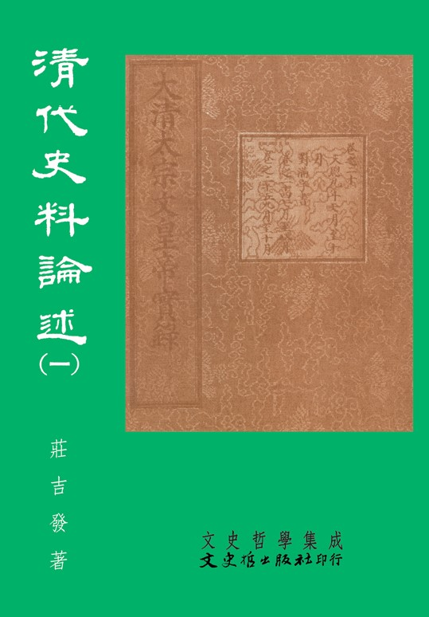
清代史料論述（一）
NT$ 360
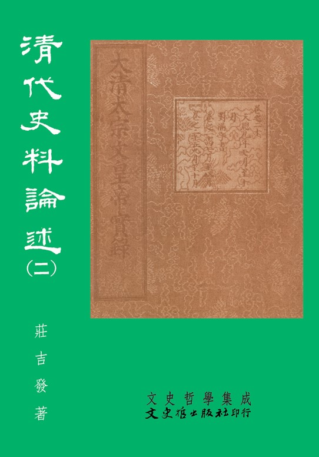
清代史料論述（二）
NT$ 360
清代祕密會黨史研究
NT$ 480

薩滿信仰的歷史考察
NT$ 420

清史論集（一）
NT$ 380
清史論集（二）
NT$ 560
清史論集（三）
NT$ 450
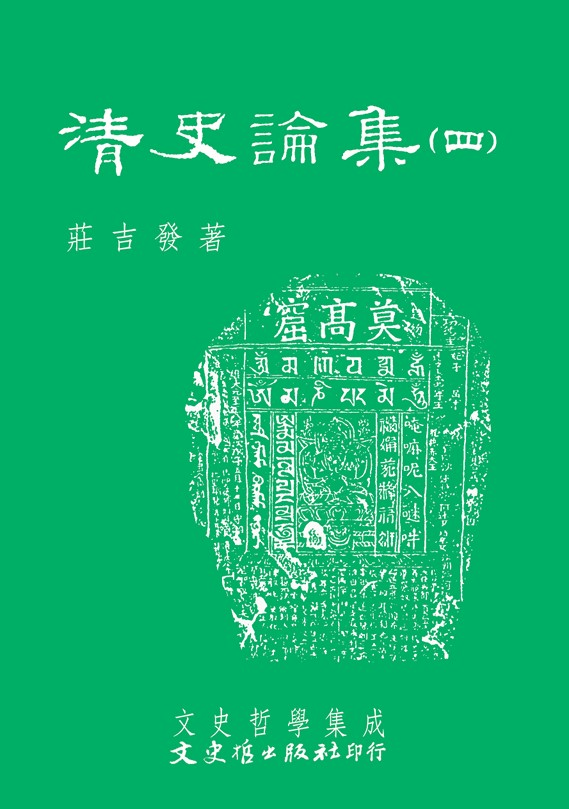
清史論集（四）
NT$ 450

清史論集（五）
NT$ 450
清史論集（六）
NT$ 450
清史論集（七）
NT$ 450

清史論集（八）
NT$ 450
清史論集（九）
NT$ 450
清史論集（十）
NT$ 450
真空家鄉：清代民間秘密宗教史研究
NT$ 640
清史論集（十一）
NT$ 450
清史論集（十二）
NT$ 460

清史論集（十三）
NT$ 400

清史論集（十四）
NT$ 450
清史論集（十五）
NT$ 450
清史論集（十六）
NT$ 450
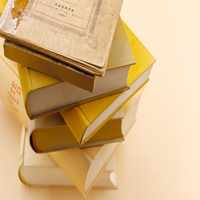
清史論集（十七）
NT$ 450

清史論集（十八）
NT$ 450

清史論集（十九）
NT$ 450
清史論集（二十）
NT$ 450
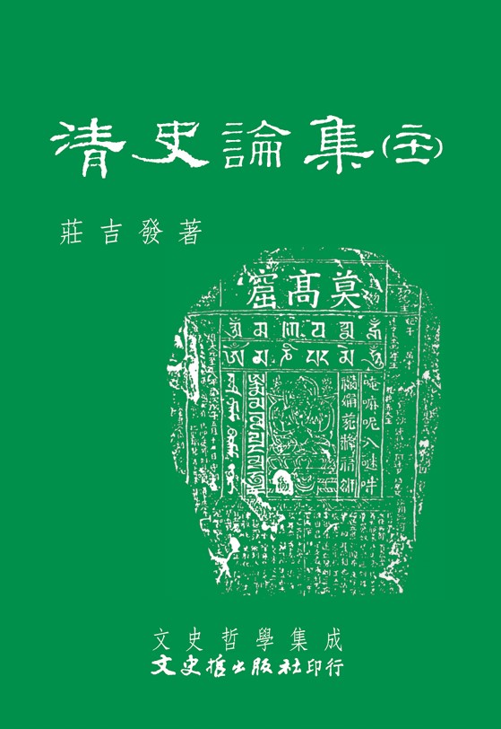
清史論集（二十一）(BOD)
NT$ 520
清史論集（二十二）(BOD)
NT$ 560
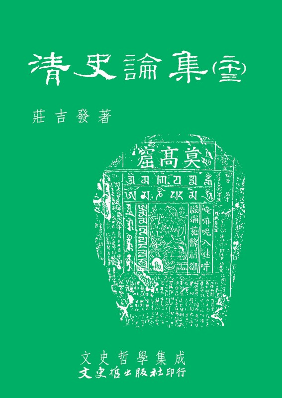
清史論集（二十三）(BOD)
NT$ 660
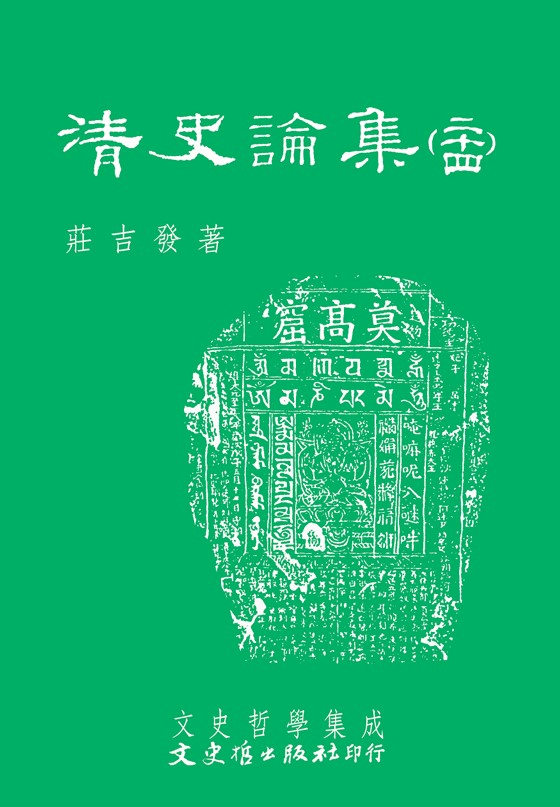
清史論集（二十四）(BOD)
NT$ 580
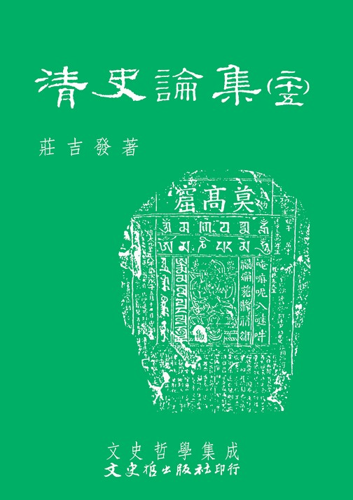
清史論集（二十五）(BOD)
NT$ 500

京師大學堂
NT$ 280

清史論集（二十六）(BOD)
NT$ 560
清史論集（二十七）(BOD)
NT$ 400
清史論集（二十八）(BOD)
NT$ 640

故宮檔案與清代臺灣史研究(一)
NT$ 480
故宮檔案與清代臺灣史研究(二)
NT$ 480

故宮檔案與清代臺灣史研究(四)
NT$ 480

清史論集（二十九）(BOD)
NT$ 660
清史論集（三十）(BOD)
NT$ 600
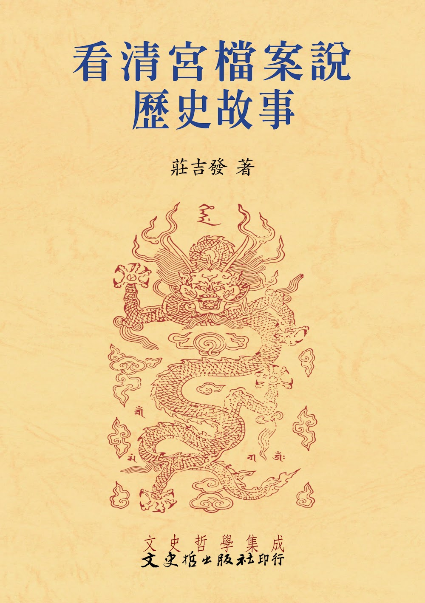
看清宮檔案說歷史故事
NT$ 400

清語老乞大
NT$ 500
清代準噶爾史料初編
NT$ 500
孫文成奏摺
NT$ 0
滿漢異域錄校注(精裝)
NT$ 500
雍正朝滿漢合璧奏摺校注
NT$ 500
滿語故事譯粹
NT$ 460
滿語故事譯粹
NT$ 360

御門聽政：滿語對話選粹
NT$ 420

滿語童話故事
NT$ 340
《鳥譜》滿文圖說校注全集
NT$ 2400
清代準噶爾史料初編（BOD）
NT$ 360
滿漢異域錄校注(增訂再版)
NT$ 560
滿語歷史故事
NT$ 480
滿語常用會話
NT$ 600
滿漢西遊記會話
NT$ 580
滿漢諺語選集
NT$ 440
康熙滿文嘉言選：都俞吁咈
NT$ 580
滿漢對譯文選
NT$ 600
清與老乞大譯註
NT$ 420
佛門孝經：滿文譯本校注
NT$ 580
創製與薪傳：新疆察布爾錫伯族與滿州語文的傳承：以錫伯文教材為中心
NT$ 660
錫伯族西遷與滿洲語文的傳承：以《錫漢會話》為中心
NT$ 560
《鳥譜》滿文圖說校注第一冊
NT$ 350
《鳥譜》滿文圖說校注第二冊
NT$ 350
《鳥譜》滿文圖說校注第三冊
NT$ 450
《鳥譜》滿文圖說校注第四冊
NT$ 400
《鳥譜》滿文圖說校注第五冊
NT$ 400
《鳥譜》滿文圖說校注第六冊
NT$ 450
<<三國志通俗演義>>滿文譯本研究
NT$ 560
文獻足徵: 以<<大清太祖武皇帝實錄>>滿文本為中心的比較研究
NT$ 700
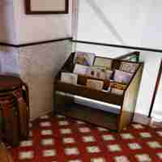
<<獸譜>>滿文圖說校注
NT$ 1260
過陰收魂: 尼山薩滿的滿語對話
NT$ 460
<<滿蒙漢合璧教科書>>滿文選讀校注
NT$ 360
玄奘取經: <<西遊記>>滿文譯本會話選讀
NT$ 500
滿文原檔:<<滿文原檔>>選讀譯注
NT$ 680
玄奘之路: <<西遊記>>滿文譯本選讀
NT$ 580
孫文成滿文奏摺
NT$ 1120
玄奘之聲: <<西遊記>>滿文譯本選讀
NT$ 480

滿文原檔<<滿文原檔>>選讀譯注: 太祖朝(二)
NT$ 700
滿文原檔<<滿文原檔>>選讀譯注: 太祖朝(三)
NT$ 720

滿文原檔<<滿文原檔>>選讀譯注: 太祖朝(四)
NT$ 720

滿文原檔<<滿文原檔>>選讀譯注: 太祖朝(五)
NT$ 740
滿文原檔<<滿文原檔>>選讀譯注: 太祖朝(六)
NT$ 720
滿文原檔<<滿文原檔>>選讀譯注: 太祖朝(七)
NT$ 750

滿文原檔<<滿文原檔>>選讀譯注: 太祖朝(八)
NT$ 740
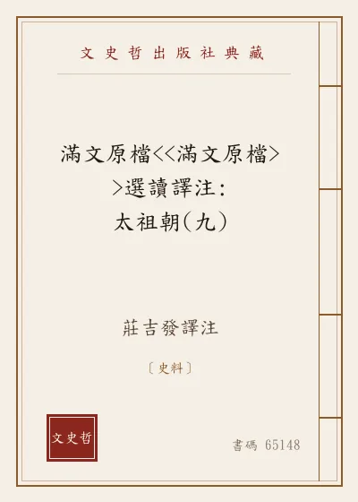
滿文原檔<<滿文原檔>>選讀譯注: 太祖朝(九)
NT$ 720
滿文原檔<<滿文原檔>>選讀譯注: 太祖朝(十)
NT$ 740
滿文原檔<<滿文原檔>>選讀譯注: 太祖朝(十一)
NT$ 740
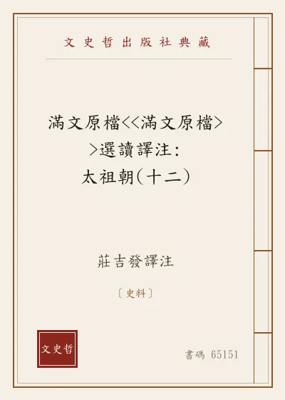
滿文原檔<<滿文原檔>>選讀譯注: 太祖朝(十二)
NT$ 740
滿文原檔<<滿文原檔>>選讀譯注: 太祖朝(十三)
NT$ 780
滿文原檔<<滿文原檔>>選讀譯注: 太祖朝(十四)
NT$ 780
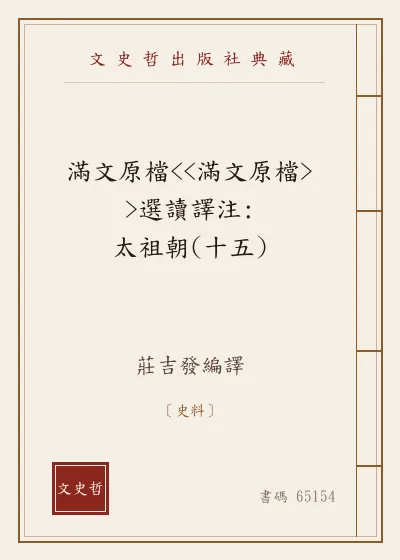
滿文原檔<<滿文原檔>>選讀譯注: 太祖朝(十五)
NT$ 760
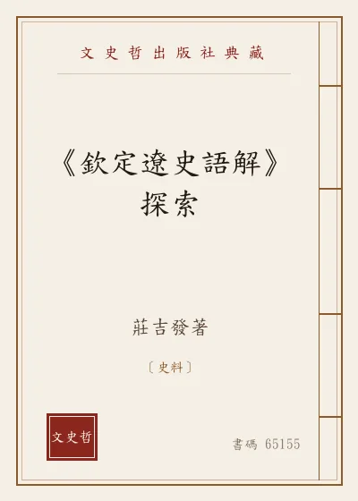
《欽定遼史語解》探索
NT$ 600
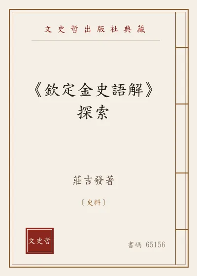
《欽定金史語解》探索
NT$ 600
《欽定元史語解》探索(一)
NT$ 600
《欽定元史語解》探索(二)
NT$ 600
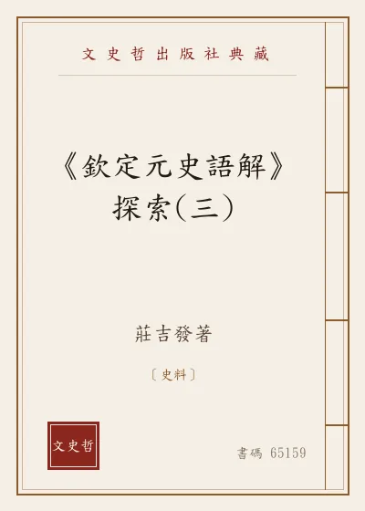
《欽定元史語解》探索(三)
NT$ 600
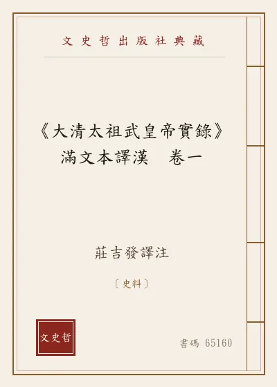
《大清太祖武皇帝實錄》滿文本譯漢 卷一
NT$ 900
《大清太祖武皇帝實錄》滿文本譯漢 卷二
NT$ 750
《大清太祖武皇帝實錄》滿文本譯漢 卷三
NT$ 900
《大清太祖武皇帝實錄》滿文本譯漢 卷四
NT$ 900
滿文原檔《滿文原檔》選讀譯注 太宗朝(一)
NT$ 900
滿文原檔《滿文原檔》選讀譯注 太宗朝(二)
NT$ 820
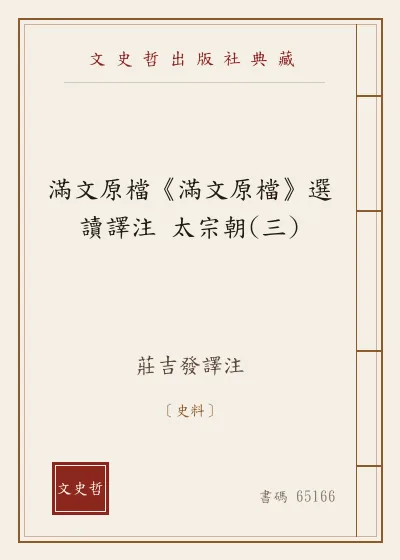
滿文原檔《滿文原檔》選讀譯注 太宗朝(三)
NT$ 820
滿文原檔《滿文原檔》選讀譯注 太宗朝(四)
NT$ 840
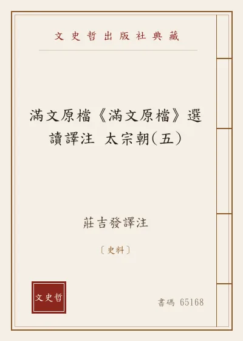
滿文原檔《滿文原檔》選讀譯注 太宗朝(五)
NT$ 880
滿文原檔《滿文原檔》選讀譯注 太宗朝(六)
NT$ 880
滿文原檔《滿文原檔》選讀譯注 太宗朝(七)
NT$ 880
滿文原檔《滿文原檔》選讀譯注 太宗朝(八)
NT$ 880
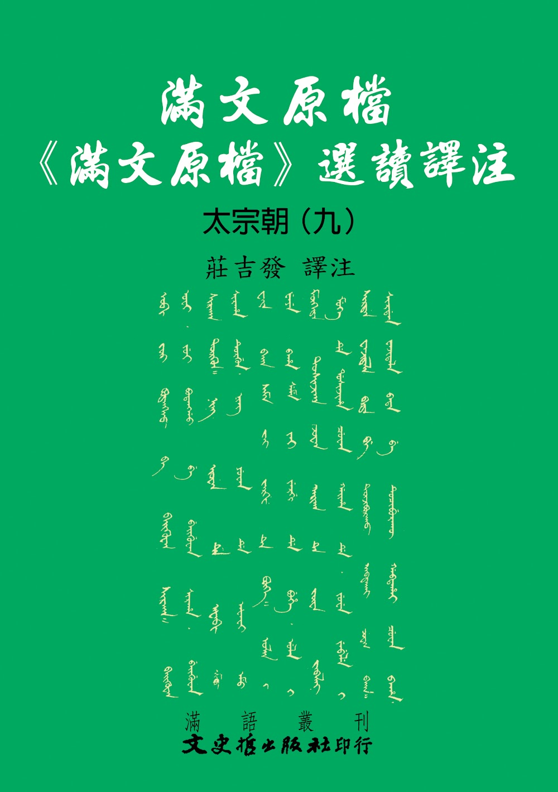
滿文原檔《滿文原檔》選讀譯注 太宗朝(九)
NT$ 880
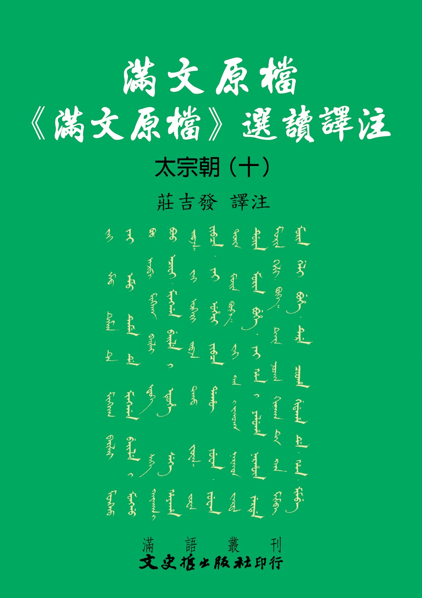
滿文原檔《滿文原檔》選讀譯注 太宗朝(十)
NT$ 880
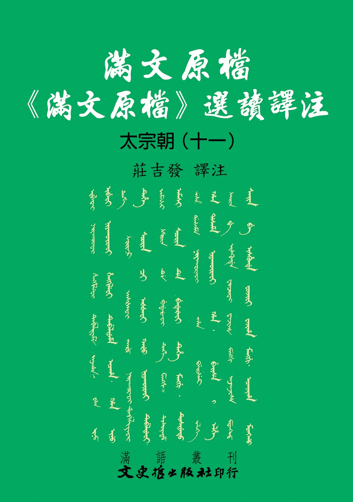
滿文原檔《滿文原檔》選讀譯注 太宗朝(十一)
NT$ 880
滿文原檔《滿文原檔》選讀譯注 太宗朝（十三）
NT$ 880
雙溪瑣語
NT$ 700
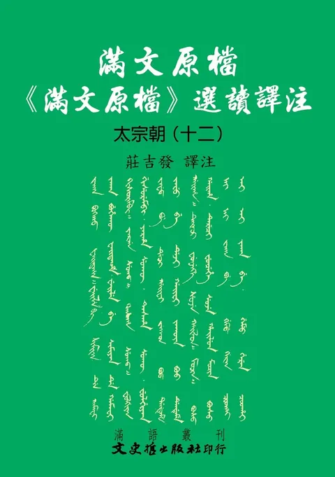
滿文原檔《滿文原檔》選讀譯注 太宗朝(十二)
NT$ 880

三藏問答：《西遊記》滿文譯本選讀導讀
NT$ 480